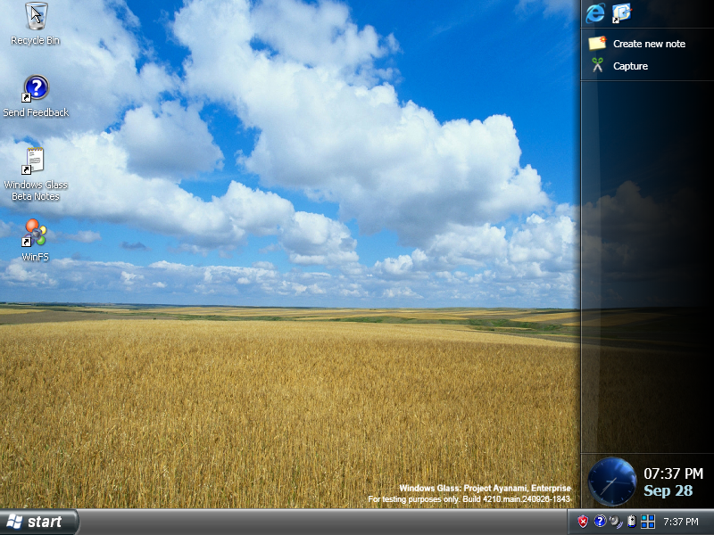
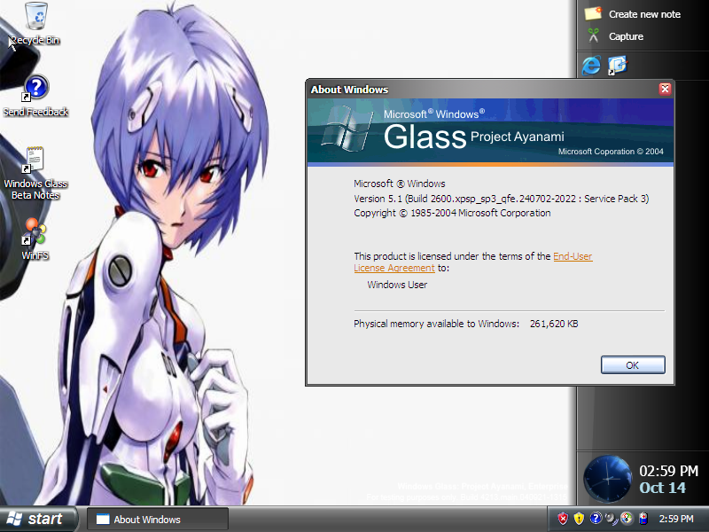
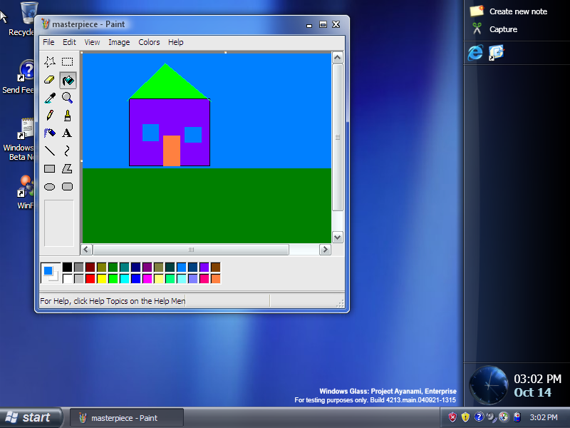
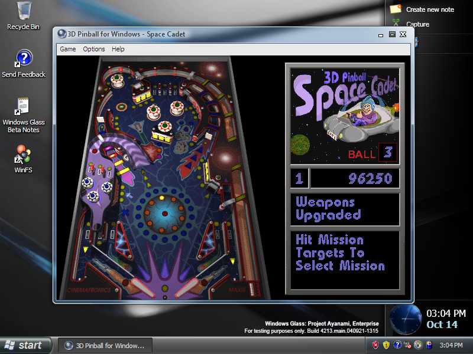

Longhorn, Complete.
Windows XP tranformed to Windows Longhorn, now featuring .NET Framework 2.0 & 3.5, Visual C++ 2005, and more.
Windows Glass is a Windows XP mod that aims to replicate Windows Longhorn without the bugs and instability.
It is based on the Latest April 2019 updates for Windows XP (Including POSReady 2009 ones) and includes the following features
- The Jade and Slate Visual Styles in Professional, Enterprise and Ultimate
- The Plex visual style in Starter, Home Basic, Home Advanced and Ultimate
- .NET Framework 1.1 to 3.5 and Visual C++ 2005
- WinFS
- x86 and x64 support
- Media Center in Home Advanced and Ultimate (it is installable in Professional but not installed by default)
- Wallpapers from Pre and Post reset Longhorn
- Areo Transparency and Window FX powered by several programs
- And More...
Download today, if you wish.
Gallery (better version soon)



